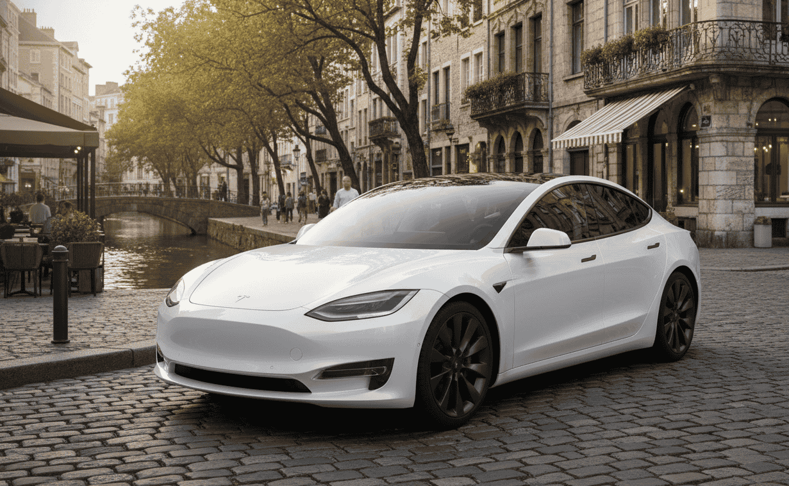
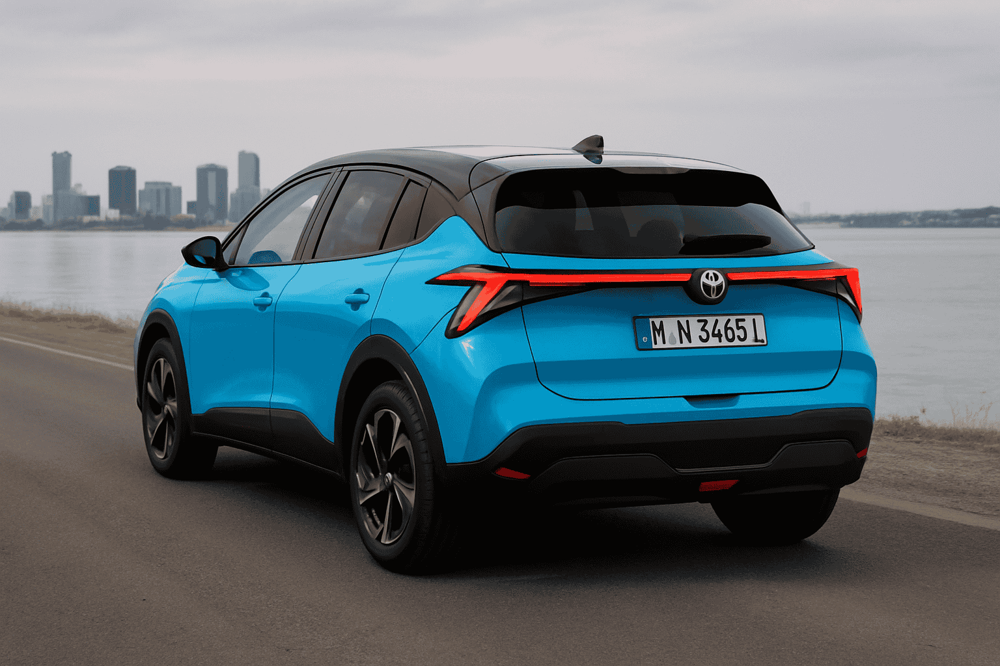

Llevo meses recopilando datos de taxistas que han dado el salto al coche eléctrico en ciudades como Madrid, Barcelona, Valencia y Sevilla. Lo que me cuentan contradice muchos de los mitos que circulan en el sector. Algunos se arrepienten, sí. Pero la mayoría, cuando ven los números en su cuenta bancaria a final de mes, no cambiarían su eléctrico por nada.
En este artículo voy a compartir contigo el análisis más completo que he realizado sobre la rentabilidad real del taxi eléctrico: coste por kilómetro desglosado, comparativa con diésel, modelos más eficientes, estrategias de carga y, sobre todo, la verdad sobre cuándo recuperas la inversión.
La realidad del taxi eléctrico en España
Según los datos más recientes de la Federación Profesional del Taxi, ya hay más de 4.500 taxis eléctricos operando en España, y la cifra crece cada mes. Madrid lidera con más de 1.800 unidades, seguida de Barcelona con 1.200 y Valencia con cerca de 400. La tendencia es clara e irreversible.
Pero más allá de las estadísticas oficiales, lo que me interesa es la experiencia real de los profesionales. He hablado con decenas de taxistas eléctricos y hay un patrón que se repite: los primeros tres meses son de adaptación, aprender a gestionar la autonomía y encontrar las estrategias de carga óptimas. Después de ese periodo, la inmensa mayoría reconoce que no volvería atrás.
¿Por qué? La respuesta está en los números. Y eso es precisamente lo que vamos a desgranar.
El coste real por kilómetro: las cifras que importan
Aquí está el dato que muchos taxistas guardan celosamente: el coste de "combustible" por kilómetro en un taxi eléctrico puede ser hasta 5 veces inferior al de un diésel. Pero la cifra exacta depende de varios factores que voy a explicarte.
⚡ Coste por kilómetro según estrategia de carga:
- Carga en casa (hora valle, 0,10 €/kWh): 0,015 - 0,020 €/km
- Carga en casa (tarifa plana, 0,18 €/kWh): 0,027 - 0,036 €/km
- Carga lenta pública (0,30 €/kWh): 0,045 - 0,060 €/km
- Carga rápida pública (0,50 €/kWh): 0,075 - 0,100 €/km
- Carga con paneles solares propios: 0,005 - 0,010 €/km
*Calculado para un consumo medio de 15-20 kWh/100km típico en conducción de taxi urbano
Como puedes ver, la diferencia entre cargar en casa por la noche y depender exclusivamente de carga rápida pública es abismal: de 0,015€/km a 0,10€/km. Por eso, la estrategia de carga es absolutamente crítica para la rentabilidad del taxi eléctrico.
Un taxista que recorre 200 km diarios y carga en casa en hora valle gasta unos 3€ al día en "combustible". El mismo trayecto con carga rápida exclusivamente le costaría 20€. Y con un diésel, alrededor de 21€. La diferencia anual supera los 6.000€.
Comparativa brutal: eléctrico vs diésel
Para hacer una comparativa justa, voy a usar datos reales de consumo en servicio de taxi, no las cifras de laboratorio que publican los fabricantes.
💰 Comparativa de costes anuales (60.000 km/año):
TAXI DIÉSEL (consumo real 7L/100km):
- • Combustible: 4.200L × 1,50€ = 6.300€/año
- • Mantenimiento (aceite, filtros, correas...): 1.200€/año
- • Total operativo: 7.500€/año
TAXI ELÉCTRICO (consumo real 16 kWh/100km, carga mixta):
- • Electricidad (70% casa + 30% pública): 9.600 kWh × 0,18€ = 1.728€/año
- • Mantenimiento (frenos, neumáticos, revisión): 400€/año
- • Total operativo: 2.128€/año
🎯 Ahorro anual: 5.372€
Más de 5.000€ anuales de ahorro solo en costes operativos, que pueden incrementarse aún más con soluciones de autoconsumo fotovoltaico. En cinco años de uso intensivo como taxi, estamos hablando de más de 25.000€ de diferencia. Si quieres profundizar en este análisis, te recomiendo nuestro artículo sobre el coste total de propiedad de un coche eléctrico frente a gasolina. Estos datos explican por qué cada vez más taxistas dan el paso, a pesar de la inversión inicial superior.
Los modelos más rentables para taxi en 2025
Tras analizar los datos de consumo, fiabilidad, coste de adquisición y experiencias de taxistas, estos son los modelos que mejor relación rentabilidad-prestaciones ofrecen actualmente para el servicio de taxi, incluyendo opciones de híbridos enchufables para quienes necesitan mayor autonomía:

Tesla Model 3 Highland
El rey indiscutible del taxi eléctrico en España. Su principal ventaja es el acceso a la red de Superchargers, la más fiable y extendida del país. El consumo real en servicio taxi ronda los 14-16 kWh/100km, uno de los más bajos del mercado. La versión Long Range ofrece más de 500 km reales de autonomía.
- Precio: desde 42.970€
- Autonomía WLTP: 629 km (Long Range)
- Consumo real taxi: 14-16 kWh/100km
- Coste/km en casa: 0,014-0,016€
BYD Seal
La alternativa china que está ganando terreno rápidamente. Excelente relación calidad-precio con una batería de 82,5 kWh que ofrece autonomía sobrada para una jornada completa. Los taxistas destacan su confort y el amplio espacio interior.

BYD Seal
La apuesta más interesante en cuanto a relación calidad-precio. Su batería LFP Blade es una de las más duraderas del mercado, con garantía de 7 años o 150.000 km. El consumo real en ciudad es de unos 15-17 kWh/100km, muy contenido para sus dimensiones.
- Precio: desde 45.990€
- Autonomía WLTP: 570 km
- Consumo real taxi: 16-18 kWh/100km
- Coste/km en casa: 0,016-0,018€
Hyundai Ioniq 6
El coche eléctrico con menor consumo del mercado gracias a su aerodinámica excepcional (Cx de 0,21). En conducción de taxi urbano e interurbano, algunos profesionales reportan consumos de solo 13-15 kWh/100km. Una máquina de eficiencia.
Hyundai Ioniq 6
El coche eléctrico con menor consumo del mercado gracias a su aerodinámica excepcional (Cx de 0,21). En conducción de taxi urbano e interurbano, algunos profesionales reportan consumos de solo 13-15 kWh/100km. Una máquina de eficiencia.
- Precio: desde 46.900€
- Autonomía WLTP: 614 km
- Consumo real taxi: 13-15 kWh/100km
- Coste/km en casa: 0,013-0,015€
MG4 Extended Range
La opción más económica con prestaciones de gama media-alta. Con 77 kWh de batería y más de 400 km reales de autonomía, es perfecto para taxistas que buscan minimizar la inversión inicial sin renunciar a una jornada completa sin cargas. Si estás dudando entre el MG4 y otros modelos, te recomendamos leer nuestra comparativa detallada entre el BYD Dolphin y el MG4.

MG4 Electric
La opción más económica para entrar en la movilidad eléctrica. Con un precio desde 35.000€, es el único familiar 100% eléctrico por debajo de los 40.000€. El consumo es de 16-18 kWh/100km y la autonomía ronda los 400 km reales.
- Precio: desde 34.990€
- Autonomía WLTP: 520 km
- Consumo real taxi: 16-18 kWh/100km
- Coste/km en casa: 0,016-0,018€
💡 Mi recomendación según perfil:
- Taxi urbano (150-200 km/día): MG4 Extended Range — inversión contenida, autonomía suficiente
- Taxi mixto urbano-interurbano (200-300 km/día): Tesla Model 3 o BYD Seal — mejor red de carga y autonomía
- Máxima eficiencia y viajes largos: Hyundai Ioniq 6 — consumo imbatible, carga ultrarrápida 800V
Autonomía real trabajando: sin fantasías
Uno de los mayores miedos de los taxistas que se plantean el cambio es la autonomía. Voy a ser honesto: las cifras WLTP que publican los fabricantes hay que reducirlas entre un 15% y un 25% en uso real de taxi, especialmente en verano con el aire acondicionado a tope o en invierno con la calefacción.
¿Por qué? El servicio de taxi implica arranques constantes, uso continuo de climatización, y conducción urbana con muchas paradas. Todo esto aumenta el consumo respecto a las condiciones de laboratorio.
📊 Autonomía real vs homologada (condiciones de taxi):
- Tesla Model 3 LR: 629 km WLTP → 480-530 km reales
- BYD Seal: 570 km WLTP → 430-480 km reales
- Hyundai Ioniq 6 LR: 614 km WLTP → 500-550 km reales
- MG4 Extended: 520 km WLTP → 390-430 km reales
La buena noticia es que la mayoría de jornadas de taxi en España rondan los 150-250 km. Con cualquiera de estos modelos puedes completar una jornada completa sin necesidad de cargar durante el servicio. Los que hacen doble turno o largos recorridos interurbanos pueden necesitar una carga rápida de 20-30 minutos a mitad de jornada.
Estrategias de carga para maximizar beneficios
La estrategia de carga es donde se gana o se pierde la rentabilidad del taxi eléctrico. He identificado tres perfiles de taxistas según sus posibilidades:
Perfil A - Carga en casa (el ideal): Si tienes plaza de garaje con posibilidad de instalar un wallbox, esta es la opción ganadora. Cargas por la noche en hora valle a 0,08-0,12 €/kWh, lo que te da el coste por kilómetro más bajo posible. La inversión en wallbox (600-1.500€) se amortiza en pocos meses.
Perfil B - Carga mixta: Cargas principalmente en casa pero complementas con carga pública cuando es necesario. Es importante elegir bien los puntos de carga: hay grandes diferencias de precio entre operadores. Algunas apps como Electromaps te permiten comparar precios en tiempo real.
Perfil C - Dependiente de carga pública: Si no puedes cargar en casa, la rentabilidad se reduce pero sigue siendo superior al diésel. La clave está en buscar puntos de carga lenta (0,25-0,35 €/kWh) y evitar la carga rápida (0,50-0,70 €/kWh) siempre que sea posible. Algunos taxistas aprovechan las pausas para comer para cargar en puntos lentos.
⚠️ Errores que arruinan la rentabilidad:
- ✗ Depender exclusivamente de carga rápida pública
- ✗ No aprovechar la tarifa con discriminación horaria
- ✗ Cargar al 100% constantemente (degrada la batería más rápido)
- ✗ No planificar las cargas según la jornada de trabajo
- ✗ Ignorar la red de Superchargers de Tesla si tienes un Tesla
El ahorro oculto: mantenimiento casi inexistente
Hay un factor que muchos taxistas subestiman al hacer sus cálculos: el ahorro en mantenimiento. Un taxi diésel que hace 60.000 km al año necesita cambios de aceite cada 15.000-20.000 km, filtros, correas de distribución, embrague... La factura anual fácilmente supera los 1.000-1.500€.
Un taxi eléctrico prácticamente no tiene mantenimiento mecánico. No hay aceite que cambiar, ni filtros de combustible, ni correas, ni embrague, ni caja de cambios convencional. Los frenos duran mucho más gracias a la frenada regenerativa. Según estudios recientes, las baterías de los coches eléctricos duran más de lo esperado, incluso en uso intensivo como taxi. Además, los cambios en la ITV para coches eléctricos han simplificado los requisitos de mantenimiento. El mantenimiento se reduce a:
- Neumáticos (similar al diésel, quizá algo más de desgaste por el peso)
- Líquido de frenos cada 2 años
- Filtro de habitáculo anual
- Revisión general anual (inspección visual, software...)
Coste anual estimado: 300-500€ frente a los 1.000-1.500€ del diésel. Son 700-1.000€ adicionales de ahorro anual que muchos no tienen en cuenta.
Ayudas y subvenciones para taxis eléctricos
El sector taxi tiene ventajas específicas en cuanto a ayudas para la electrificación. Las principales en 2025 son:
Plan MOVES III (ampliado): Hasta 9.000€ de ayuda para vehículos eléctricos destinados a taxi, con achatarramiento de un vehículo de más de 7 años. Sin achatarramiento, la ayuda es de 7.000€. Esta ayuda es acumulable con otras autonómicas y municipales.
Ayudas autonómicas: Comunidades como Madrid, Cataluña, País Vasco o Valencia tienen programas adicionales que pueden sumar entre 1.000€ y 4.000€ extra.
Ayudas municipales: Algunos ayuntamientos ofrecen bonificaciones en el IVTM (Impuesto de Vehículos de Tracción Mecánica) de hasta el 75% para vehículos eléctricos, además de reducciones en tasas de licencia de taxi. Estas ayudas se suman a los incentivos estatales y autonómicos disponibles para la movilidad eléctrica.
💶 Ejemplo de ayudas acumuladas (Madrid):
- • Plan MOVES III: 9.000€
- • Ayuda Comunidad de Madrid: 2.500€
- • Bonificación IVTM: 75% (ahorro ~150€/año)
- Total ayudas directas: 11.500€
Con estas ayudas, un Tesla Model 3 que cuesta 42.970€ puede quedarse en poco más de 31.000€ de inversión real. La diferencia con un Skoda Octavia diésel similar se reduce drásticamente. Si estás decidiendo entre un Tesla y otros modelos, no te pierdas nuestro análisis detallado del BYD Seal vs Tesla Model 3 2025.
¿Cuándo se amortiza la inversión?
Esta es la pregunta del millón. Voy a hacer el cálculo con un ejemplo concreto:
Escenario: Taxista que recorre 60.000 km/año, compara un Tesla Model 3 (42.970€) con un Skoda Octavia diésel (35.000€). Aplica ayudas de 9.000€ al eléctrico.
📈 Cálculo de amortización:
- Diferencia precio inicial: 42.970€ - 9.000€ - 35.000€ = -1.030€ (el eléctrico es MÁS BARATO)
- Ahorro anual combustible: 6.300€ - 1.728€ = 4.572€
- Ahorro anual mantenimiento: 800€
- Ahorro total anual: 5.372€
🎯 Resultado: El taxi eléctrico es rentable desde el primer día y genera 5.372€ de beneficio adicional cada año.
Incluso sin ayudas, con una diferencia de precio de 8.000€ a favor del diésel, el taxi eléctrico se amortiza en menos de 18 meses. Después, todo es beneficio extra.
Preguntas frecuentes sobre taxis eléctricos
FAQ – Taxis eléctricos
🔹 ¿Cuánto cuesta realmente el kilómetro en un taxi eléctrico?
El coste real por kilómetro de un taxi eléctrico oscila entre 0,015€ y 0,10€ dependiendo del modelo, consumo y estrategia de carga. Cargando en casa en hora valle (0,08-0,12 €/kWh), un coche que consume 15 kWh/100km tiene un coste de solo 0,015€/km. En carga rápida pública (0,50 €/kWh), sube a 0,075-0,10€/km. Comparado con un taxi diésel que consume 7L/100km a 1,50€/L (0,105€/km), el ahorro es del 50-85% en combustible.
🔹 ¿Cuál es el mejor coche eléctrico para taxi en 2025?
Los modelos más populares y rentables para taxi en 2025 son el Tesla Model 3 Highland (por su red de Superchargers y bajo consumo), el BYD Seal (excelente relación precio-autonomía), el Hyundai Ioniq 6 (consumo récord de 13-15 kWh/100km), y el MG4 Extended Range (precio contenido con más de 400km reales). La elección depende del tipo de servicio y de si puedes cargar en casa.
🔹 ¿En cuánto tiempo se amortiza un taxi eléctrico?
Con las ayudas actuales (hasta 11.500€ acumulables), un taxi eléctrico puede ser incluso más barato que su equivalente diésel desde el primer día. Sin ayudas, la amortización se produce entre 12 y 24 meses gracias al ahorro de 4.000-6.000€ anuales en combustible y 700-1.000€ en mantenimiento. Un taxista que recorra 60.000 km/año ahorra más de 5.000€ anuales.
🔹 ¿Qué autonomía real tiene un taxi eléctrico trabajando?
La autonomía real en servicio de taxi es un 15-25% inferior a la homologada WLTP debido al uso intensivo de climatización y conducción urbana. Un Tesla Model 3 LR ofrece 480-530 km reales, un Hyundai Ioniq 6 alcanza 500-550 km. Para servicio urbano típico (150-250 km diarios), cualquier eléctrico con más de 400 km reales es suficiente para una jornada sin cargar.
Conclusión: los números no mienten
Después de analizar todos los datos, la conclusión es clara: el taxi eléctrico es más rentable que el diésel en prácticamente todos los escenarios, siempre que se gestione correctamente la estrategia de carga.
El ahorro de 5.000€ o más al año no es una promesa de marketing, es una realidad respaldada por miles de taxistas que ya han hecho la transición. La clave está en poder cargar en casa (o tener acceso a carga lenta económica), elegir un modelo con buena autonomía real, y aprovechar las ayudas disponibles.
Si estás pensando en dar el salto, mi recomendación es que hagas tus propios números con nuestra calculadora de ahorro y hables con taxistas de tu ciudad que ya conduzcan eléctrico. Los datos de este artículo son promedios; tu situación particular puede ser incluso más favorable.
El futuro del taxi es eléctrico. Y los que se adelanten, disfrutarán antes de sus beneficios económicos.